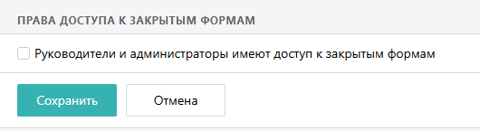
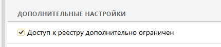
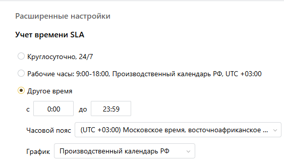
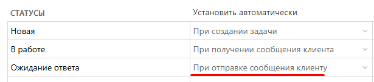
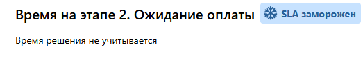
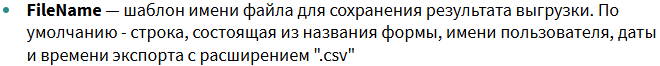
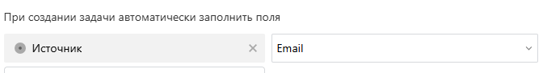
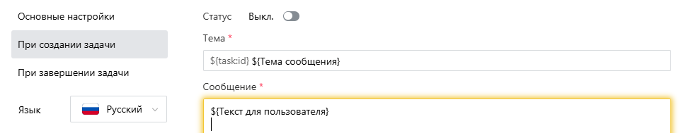
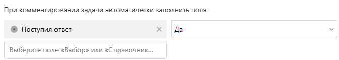
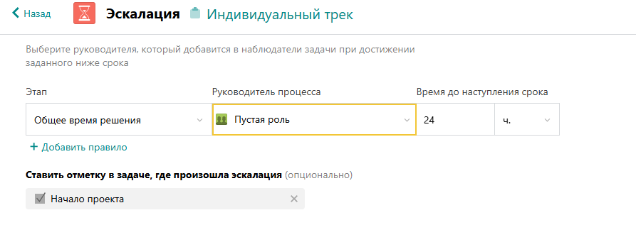

Советы по настройке процессов
Вопросы и пожелания к статье можно присылать в задаче
Функционал форм в Pyrus позволяет настроить почти любой процесс, начиная с подсчёта интервалов между курениями и заканчивая процессом продажи от лида до отгрузки клиенту. Здесь есть две задачи:
Создать пользователям удобную инфраструктуру
Сделать процесс максимально адаптивным в будущем, особенно когда ты передашь это на внутреннюю поддержку клиенту
Поля
Зачастую информации в форме настолько много, что задачи становятся нечитаемыми. Поэтому важно настроить шаблон, чтобы при открытии задачи пользователю было интуитивно понятно, куда ему нажимать и что заполнять. Вот несколько советов, которые позволят избежать "мусорности" формы.
Управляй видимостью
Пожалуй, основной твой инструмент — видимость. Постарайся сделать так, чтобы каждый сотрудник, заходя в задачу, видел только ту информацию, которая касается его. Чтобы добавить видимость от этапа, добавь поле типа Этап на шаблон формы.
Здесь нужно быть аккуратным с взаимозависимостью. Если Поле А зависит от заполненности Поля Б, которое в свою очередь видно только на 3 этапе, то и Поле А тоже будет видимо только на 3 этапе. Даже если Поле Б заполнено, на 4 этапе поле не будет видимо.
Также следует помнить, что скрипты видимости не работают в мобильном приложении, поэтому их следует максимально избегать.
Скрипты могут читать невидимые поля, но не могут их заполнять
Группы
Группы очень удобны не только своим основным функционалом. Также ты можешь облегчить себе и будущим администраторам жизнь, навесив условия видимости или неизменность на всю группу, а не на каждое поле внутри в отдельности.
Ещё группы могут быть полезны в ситуациях, когда какие-то поля должны быть видны части участников процессов при заходе в задачу, а остальным они базово не нужны, но могут быть интересны. В таком случае, ты можешь поместить их в группу, сделать её по умолчанию раскрытой и добавить вот этот скрипт. В таком случае, для большинства группа будет свёрнута в момент захода в задачу.
Технические поля и группа для них
В процессе настройки у тебя будут возникать следующее противоречие: пользователю удобнее заполнять поле такого типа, а для отчётности или бота тебе нужен другой тип поля. Или в сводке тебе надо показывать категории сделок по сумме, но для пользователей внутри этой задачи подобное поле, пусть даже автоматическое, будет только мешать.
В таком случае на помощь приходит постоянно свёрнутая группа "Технические поля", в которую ты поместишь поля, которые будут заполняться скриптами. Таким образом, у тебя сильно сокращается длина формы и пользователи через некоторое время вообще перестают обращать внимание на эту группу. Что туда можно поместить:
Поля типа Выбор и Справочник для сводки
Разнообразные расчётные показатели для реестра или выгрузок
Поля, которые заполняют боты
Поля для печатных шаблонов
Разнообразные текстовые поля, аккумулирующие инфу из нескольких полей для удобного поиска в реестре
Поля для автоматической регистрации каких-то действий пользователей, которые потом используются в отчётности
Справочник vs Выбор
По умолчанию люди стараются использовать Выбор, так как он понятный и его можно редактировать прямо во время настройки поля. Однако поле Справочник имеет несколько преимуществ, которые иногда могут перевесить неудобство в его администрировании:
В подпроцессах лучше максимально использовать справочник. Если у полей Выбор в основной и дочерней формах разные наборы вариантов, то перенос между ними невозможен. Поэтому у администраторов возникает дополнительная головная боль по поддержанию вариантов выбор в обеих формах одинаковым
В таблицах нельзя добавить поле Мультивыбор. А множественный выбор в справочнике настроить можно
Поле Выбор никак нельзя отфильтровать. Например, чтобы в таблице нельзя было выбрать два одинаковых варианта в разных строках
Формы VS Справочники
Если тебе нужно вести реестр каких-то объектов, то в некоторых случаях лучше использовать Форму, а в некоторых Справочник. В этой статье описаны особенности каждого из подходов
Справочник на веб-форме
Часто клиенты сталкиваются с такой проблемой: у них есть внутренний справочник, который никак не используется пользователями, но хранит какие-то опорные значения для расчётов или за счёт значений в нём происходит валидация полей или фильтрация других справочников. И они добавляют скрипт, который загружает этот справочник и проводит какие-то манипуляции. Но на веб-форме этот скрипт перестаёт работать у пользователей, но продолжает работать у самого пользователя, даже на веб-форме. Почему?
Дело в том, что доступ пользователя к справочнику регулируется его причастностью к организации. То есть, пользователь организации Pyrus может скачать любой справочник нашей организации, а справочники Финграда ему недоступны. Если же форму заполняет внешний пользователь, без авторизации, то ему даются права на загрузку только тех справочников, для которых есть поле на шаблоне формы в разделе "Ввод". Поэтому в таких случаях стоит добавить поле на шаблон формы, ссылающееся на этот справочник и сделать условие видимости Роль = Пустая роль. В этой пустой роли не должно быть пользователей.
Почему же у админа на веб-форме всё работает?
Дело в том, что когда ты открываешь веб-форму в браузере, в котором ты уже авторизован в Pyrus, веб-форма подтягивает данные и доступы твоего активного пользователя. Ты можешь убедиться в этом, если сделаешь веб-форму и добавишь скрипт, в котором будет вывод информации о комментаторе console.log(state.commenter)
Аккуратнее с файлами
Просто регулярное напоминание, что поле Файл нельзя очистить никаким способом. Поэтому при настройке важные Файлы стоит показывать только на определённых этапах, а с какого-то момента можно сделать его неизменяемым
Время — ориентир на таймзону
Поле типа Время имеет свойство сохранять таймзону заполняющего пользователя. То есть, если человек в Москве заполнил 12:00, пользователь в Екатеринбурге 14:00. Это может быть полезно в процессах доставки, но есть риск запутать, если Время используется вместе с Датой.
Таким же свойством обладает поле типа Срок со временем
Таблица vs Поля
Многие клиенты при самостоятельной настройке форм используют обычные поля в местах, где нужно использовать таблицу. Пример: для контактных лиц в карточке клиента используются 4 группы вместо полей. Если контактов больше 4, они просто заносятся в отдельное многострочное текстовое поле.
Обычно мотивируется такое поведение невозможностью производить поиск в реестре по табличным полям. В таком случае можно предложить небольшой скрипт, который в отдельное поле выводит всю информацию из таблицы и производить по нему поиск.
Системные поля
Советуем сразу добавить на шаблон формы поля "Дата создания", "Открыта/завершена" и "Этап". Каждое из этих полей заполняется автоматически системой, если поставить на них условие видимости от пустой роли, то они всё равно заполнятся. Если добавить их после начала активной эксплуатации, то в старых задачах они останутся незаполненными. В открытых задачах в них будет занесено значение после следующего комментария. Однако эти поля могут быть полезны:
Дата создания обычно используется в реестре после полугода-года использования формы во время поиска какой-нибудь старой задачи. Если поля нет на шаблоне, то и в реестре нельзя будет отфильтровать задачи
Открыта/завершена - может использоваться в сводке, чтобы показывать статистику только по открытым задачам
Этап - от него обычно выстраиваются условия видимости. Это единственный тип поля, видимость от которого может влиять даже если само поле находится ниже на шаблоне формы. Если в какой-то момент развития процесса тебе понадобится скрыть поле на этапе, то в открытых задачах придётся произвести массовое редактирование, чтобы оно заполнилось, а условие начало в них работать
Статус
В настройках маршрутизации можно указать варианты статусов. На основе них рисуется доска формы, они могут автоматически устанавливаться при отправке сообщений клиентам и при их установке могут автоматически отправляться письма клиентам. А ещё это единственное поле, которое может устанавливаться при помощи скрипта и оставаться доступным для заполнения пользователем
Особенностью этого поля является то, что если пользователь его переключает, то установка происходит сразу, не требуя нажатия кнопки "Сохранить". Поэтому нельзя настроить скрипт на отслеживание изменения этого поля. Только постфактум его читать (если поставить true в onChange, скрипт отработает сразу после установки статуса и если пользователь не нажмёт кнопку "Сохранить" значения этого скрипта не занесутся в базу).
Но если статус установлен скриптом, то он не сохранится пока пользователь не нажмёт соответствующую кнопку.
Представляет из себя поле типа Выбор, с единственным выбором и кодом "Status"
Маршрутизация
Маршрутизация в Pyrus настраивается поэтапно, а не в виде сценариев, как в BPMN. Поэтому при настройке маршрута тебе надо понять при каких условиях на каком этапе какие пользователи должны подключиться. Обязательность, неизменность и видимость полей от этапа советуем настраивать после настройки маршрута.
Возврат к этапу
Очень часто в клиентских диаграммах ты увидишь бесконечный цикл возврата инициатору для доработок. Но как это сделать в Pyrus? Ответ — никак. Судя по опыту, пользователи Pyrus очень быстро осваиваются с тегированием и, даже если у них настроены дополнительные этапы для переделки или есть кнопка с вызовом бота, который по умным правилам перезапросит согласование, не пользуются этим. Чаще всего можно увидеть просто как пользователи зовут инициатора для того, чтобы задать ему вопрос. Поэтому лучше сделать на верху шаблона поле с именем инициатора, чтобы пользователи знали, кого знать
А если всё-таки надо настроить цикл?
Представим, что бухгалтерии надо вернуть договор инициатору на доработку. В таком случае, на этап бухгалтерии добавь поле типа Выбор "Проверка пройдена?" с вариантами Да и Нет. Если Нет, то после этого этапа будет этап с инициатором, на котором он что-то делает, а потом снова этап с бухгалтерией. И вот если ей уже второй раз не нравится, то они перезапрашивают согласование инициатора этапом ранее
Сокращение условий
Иногда в клиентских процессах прослеживается несколько сценариев, каждый из которых наступает при нескольких условиях. И если идти напрямую, то можно выставить одного человека на этап несколько раз в зависимости от комбинаций этих условий. А можно добавить техническое поле Сценарий и заполнять его скриптом на основе других полей. Таким образом резко повысится читаемость раздела маршрутизация.
Пустая роль — универсальный согласующий
В организации полезно иметь Пустую роль (можно ещё называть её Архив). В ней не должно быть пользователей. Как уже обсуждали выше, при помощи такой роли можно скрывать поля, которые заполняются разнообразными интеграциями и ботами. Но эта роль также может использоваться в двух случаях в маршрутизации.
Во-первых, пустая роль может быть полезна, чтобы держать задачу вечно открытой. Она ставится на этап и тогда никто из пользователей не может случайно закрыть задачу, поставив согласование. Тут же можно поставить условие в зависимости от какого-нибудь поля. Пример: у нас есть карточка сотрудника. И пока сотрудник работает в компании его карточка должна быть открыта. Для удобства пользователей, после увольнения карточка должна закрыться. В таком случае, мы поставим пустую роль на первый этап при условии, что Статус не равен Уволен. А статус придёт из задачи на увольнение при помощи бота.
Во-вторых, пустая роль может служить преградой для продвижения процессу далее по маршруту до какого-то события, в результате которого заполнится поле (обычно автоматически). Пример описан далее.
Ждём подпроцесс
Подпроцесс может держать задачу на своём этапе, пока не закроется подзадача. Но иногда надо пойти дальше после создания подпроцесса, но в какой-то момент дождаться его окончания. Например, в момент возврата автомобиля лизингодателю надо, чтобы к моменту продажи с него были сняты все ограничения и уплачены все штрафы. Этот процесс запускается сразу после изъятия автомобиля у лизингополучателя. Но параллельно со снятием ограничений надо найти место для хранения, оценить машину, получить возмещение страховой и тд.
Поэтому мы можем запустить подпроцесс, поставив галочку "Переходить на следующий этап". В обеих формах сделать галочку "Ограничения сняты", в подформе сделать её обязательной при завершении. А на этап Продажи добавить Пустую роль при условии, что галочка не заполнена. Тогда задача придёт на этап Продажи и будет ждать окончания процесса снятия ограничений, а после постановки галочки в подзадаче упадёт на ответственного за продажу
Доступы
Открытые и закрытые формы
По умолчанию в момент создания форма является закрытой. Если в настройках организации нет соответствующей настройки, то остальные админы организации её не видят в списке.

Также у этих форм введено ограничение на доступ к реестру (регулируется в дополнительных настройках формы). Это может помешать работе некоторых ботов

Если сделать форму открытой, то любой пользователь организации сможет создать по ней задачу. Имей это в виду, когда настраиваешь процесс, в котором важно отсутствие дубликатов, так как, если у тебя нет дублирующего справочника, ты не сможешь обеспечить уникальность задач.
Также имей в виду, что если пользователя добавить в задачу по закрытой форме и ни пользователь, ни его роль явно не прописаны на странице доступов, он получает доступ Гостя к задаче, то есть может только писать комментарии, но не сможет менять поля. При этом на него работают все поля валидации, из-за чего он в некоторых случаях не сможет отправить и простой комментарий. Пример: скрипт требует заполнить какое-то поле. Но пользователь не может заполнять поля. Соответственно, условия скрипта не выполняются и он блокирует отправку любых комментариев.
Редактирование полей администраторами
Если на поле есть неизменность, то администраторы всё равно могут его изменять. Это может сыграть как в плюс, так и в минус. Минус очевиден: если у тебя слишком много пользователей имеют доступ админа к форме (а это в том числе админы организации), то всегда есть риск, что поле изменится в момент, непредусмотренный процессом
Плюсом этого решения однако является как раз обратная сторона: иногда по процессу нужно дать возможность определённым людям менять данные в задаче. Например, только HRD может внести новую зарплату в карточку сотрудника. В таком случае, назначьте HRD админом формы (так как он скорее всего и владелец процесса).
SLA
Этот раздел обычно редактируется самим клиентом и вопросов здесь не так много.
Разные часовые пояса
Как сделать так, чтобы этот механизм работал на компанию с сотрудниками в нескольких часовых поясах? Например, федеральную сеть. Не советует делать режим расчёта круглосуточно, так как тогда в длительные праздники и выходные задачи будут просрочены. В таком случае предложите клиенту рассчитывать SLA по полному рабочему дню, но выставив график с производственным календарём

Клиент не влияет на SLA
Иногда нужно, чтобы сотрудник поддержки не страдал из-за того, что клиент долго отвечает на сообщения. В таком случае надо замораживать SLA на время ответа пользователя.
Если процесс простой, то лучше выставить SLA на статусы и поставить автоматический статус на отправку сообщений

Если же процесс сложный, с несколькими этапами, на которых есть свои SLA, то рекомендуется сделать первый этап заморозки, на который поставить или последнего комментатора (определяется простым скриптом), или пустую роль по условию нахождения задачи в этом статусе. А на этап поставить заморозку. Соответственно после получения ответа, задача вернётся на первоначальный этап и работу можно будет продолжить.

Скрипты и боты
Это большая тема освещалась уже несколько раз. Вот ссылки на полезные для изучения этого вопроса материалы.
Архив скриптов и ботов
Здесь собраны универсальные боты и скрипты, которые могут помочь в настройке процессов у клиентов. Обрати внимание, что все боты платные. Некоторые скрипты тоже.
Справка
Начать писать скрипты точно можно просто изучив справку. Особое внимание обрати на раздел с форматами полей, чаще всего проблемы возникают из-за неправильного формата чтения или записи данных
С ботами сложнее. Команда Project пишет ботов на языке Python. В справке можно прочитать про общие правила нашего апи. Также полезен будет readme файл в гите.
Раздел в БЗ
Для ботов и скриптов есть раздел в нашей БЗ с объяснением ключевых различий между ботом и скриптом. Также там есть документы для разработчиков, которые могут помочь в написании ботов
Публичный вебинар по скриптам
У нас было проведено два вебинара: только по скриптам и по скриптам и ботам. На первом рассматривались конкретные примеры использования функционала скриптов, даны примеры. Второй вебинар был более обзорный, на нём объяснялись общие принципы и отвечали на вопросы клиентов
Непубличный вебинар
Для наших сотрудников проводилась встреча, на основе которой появился второй публичный вебинар. Там проблематика была раскрыта чуть шире, также были ответы на вопросы
Тренировка
Попробуй написать скрипты для следующих 6 кейсов
В форме есть два поля: справочник и число. Справочник это каталог услуг с указанием цен в евро. Число – это курс, по которому надо пересчитать стоимость в рубли. Заполняется вручную. Надо заполнить поле типа деньги стоимостью услуги в рублях
Есть текстовое поле, в котором всегда стоит ФИО человека в полной форме. Надо в отдельное поле записывать фамилию + инициалы человека
Надо запретить редактирование поля в зависимости от роли человека. Список id ролей: 12332, 32325, 6565656
Посчитать процент строк таблицы, отмеченных галочками (галочка это отдельное колонка в таблице)
Скрипт проверки наличия дубликатов в таблице. Есть колонка с текстом. Если в двух строках значения в этой колонке равны надо вывести предупреждение, разрешив сохранение результата, но запретив утверждение этапа. Также есть отдельное поле типа Галочка. Надо игнорировать запрет, если в галочке проставлено значение.
Запретить редактирование поля в зависимости от названия департамента, в котором работает человек. Подсказка: надо использовать вспомогательное поле типа Контакт
Расширения
Много вещей в Pyrus можно сделать при помощи встроенных расширений без каких-либо ботов. Возможно, понадобится небольшой скрипт. Ниже описаны аспекты работы с некоторыми расширениями.
Pyrus Sync
Это отдельная программа, которая умеет выгружать и загружать информацию. Она работает на конкретном устройстве, используя учётные данные пользователя. Может быть полезна для нескольких сценариев:
Отчётность — Sync умеет выгружать реестры в формате csv. В свою очередь Excel умеет использовать csv файл в качестве внешнего источника данных для построения отчётности. Можно сделать процесс, при котором на компьютере аналитика стоит Sync, который регулярно выгружает реестр в csv файл, а сам аналитик просто открывает Excel-файл, в котором уже подготовлен отчёт на основе этих данных. Это же актуально для других BI систем.
Перетекание данных — некоторые настраивают процессы, в которых данные перетекают из одной формы в другую. В таком случае можно настроить экспорт одной формы в один файл, а импорт из другого. О том, как избежать создания лишних файлов и задач далее.
Синхронизация с базами данных — почти в любой системе в том или ином виде можно настроить выгрузку данных в файл. Sync можно нацелить на этот файл и таким образом синхронизировать справочники.
Как избежать лишних сущностей?
По умолчанию Sync при каждом экспорте реестра генерирует новый файл, а при импорте создаёт задачи для каждой строки файла.
Чтобы избежать создания лишних файлов в настройки экспорта нужно указать параметр FileName. В таком случае экспорт будет осуществлять в одно и то же место

При создании задач из файла, Sync может ориентироваться на одну из колонок файла, считая её колонкой уникальных значений. Аналогично работает, если ты загружаешь задачи с таблицами. В таком случае в настройках импорта ты указываешь параметры:
PkFields — массив из колонок с ключевыми значениями. Указываются названия колонок, а не полей!
TablePkFields — для таблиц
SyncExistingTasks": true
"CreateNewTask": true
Пример настройки можно посмотреть в конце статьи
Эл. почта
Очень полезное расширение, которое нужно не только в Service-Desk. Им можно пользоваться для документооборота (чтобы общаться с контрагентом, отправляя ему варианты договора) или рекрутинге (чтобы ставить встречи кандидатам)
Мне нужно только отправлять
Pyrus при подключении к почтовому ящику всегда мониторит все входящие письма. И каждое входящие письмо он или переносит в уже созданную задачу (если это ответ на письмо из Pyrus), или создаёт новую. Таким образом, очень легко утонуть в спаме.
В этом случае рекомендуется сделать первый этап разбора, на который поставить пустую роль или секретаря, который будет разбираться с поступающими письмами. Для этого выставьте настройку "Заполнять поля при создании" и поставь условие на этап. Поле можно сделать невидимым для пользователей при помощи пустой роли

Видим всю историю
Механизм отправки писем из Pyrus идентичен нажатию кнопки "Ответить" в почтовом клиенте. При смене адресов в поле Эл. почта вся история общения по задаче отправляется конечному адресату. Из-за этого может возникнуть следующий плохой сценарий:
Клиент прислал нам письмо с какими-то конфиденциальными данными
Сотрудник поддержки разбирается с ним и хочет уточнить данные у смежного отдела. Меняет адрес в поле Эл. почта и отправляет письмо в смежный отдел
Смежный отдел получает письмо с полной перепиской с клиентом. Уже риск получения конфиденциальных данных
Смежный отдел пишет ответ и указывает какую-то информацию, которую не хотелось бы передавать клиенту
Сотрудник поддержки опять меняет адрес в поле и клиент получает всю историю переписки со смежным отделом и узнаёт, что о нём думают в компании
Избежать этого можно заблокировав поле Эл. почта для изменения после создания, а для переписки со смежными отделами использовать вторую форму. Для создания задач по второй форме можно использовать только ручной труд. В таком случае настройка следующая:
При создании задачи пользователь видит многострочное поле типа Текст. В нём он пишет письмо.
В настройках интеграции указываете в приветственном письме то самое многострочное поле
При создании сообщения пользователям будет направлено сообщение, которое было написано пользователем.

Однако такой механизм не сработает, если вместе с первым сообщением нужно иметь возможность прикрепить файлы. В таком случае варианта два:
Заставить пользователя создавать задачу, потом заходить в неё и писать письмо
Подключить бота отправки эл.почты, который умеет отправлять письма со своего этапа и прикладывать файлы из разных полей (в том числе табличных)
Уйти с этапа
Иногда нужно, чтобы задача пропала у исполнителя, пока мы ожидаем ответа клиента. Чаще всего это решается при помощи статуса, а именно:
Настраиваем статус, который устанавливается при отправке сообщения из Pyrus
На этапе исполнителя делаем условие, что он подключается, если статус не равен указанному в качестве автоматического. А при условии этого статуса подключаем Пустую роль
Если статусная модель у формы сложна и нам важно оставлять ручной статус (например, в заявках на поставку нам не особо важен статус общения, важнее статус самой поставки) можно в настройках интеграции поставить заполнение поля при поступлении ответа. В таком случае механизм такой же как со статусом.

Telegram
Интеграция с телеграм работает при помощи ботов в телеграме. По правилам телеграма один бот не может быть присоединён к двум сервисам. Поэтому если у клиента есть какой-то телеграм-бот с заложенной логикой, вы не можете его просто присоединить в Pyrus. При подключении интеграции, предыдущий сервис отвалится
I******am
Эта соцсеть запрещена в РФ, поэтому для подключения рускоговорящим компаниям нужно сделать следующее:
В предпочтениях пользователя выбрать английский язык
Зайти в нужную форму и настроить интеграцию. Справка доступна на английском
Можно переключиться обратно на русский, расширение останется активно
Диадок и СБИС
Эти расширения работают при помощи системных ботов (клиент за них не платит). При подключении интеграции бот автоматически подключится на последний этап. Поэтому, если нужно чтобы бот отработал где-то в середине процесса, подобное расширение лучше подключить в самом начале настройки формы, а затем выстроить этапы вокруг добавленного бота.
Веб-форма
Предзаполненные формы
Веб-формы могут быть предзаполненными. Для этого занесите значения в разделе заполнения формы, внизу появится кнопка для копирования ссылки на такую форму. Логика формирования ссылки простая:
https://pyrus.com/form/<номер формы>?f
=<значение поля, для разных полей разные форматы >&f =<значение второго поля>
Если полей несколько, ставится разделитель &
Также можно отправить ссылку с предзаполненным и скрытым полем. Для этого поставьте после f букву h. То есть в результате получится
fh
=<значение поля>
Если встраиваете веб-форму, то предзаполнение также доступно. Просто в коде разделителем служит не &, а \x26. Пример:
s.src='https://pyrus.com/js/externalformstarter?jsonp='+f+'\x26id=1344000\x26fh6';
Этот код скрывает поле с id 6.
Скрипты на веб-формах
Мы уже касались этого вопроса ранее. При открытии веб-формы Pyrus проверяет твои доступы в соответствии с авторизацией в браузере. Поэтому если ты в браузере авторизирован в какого-то пользователя, то Pyrus будет использовать его доступы. Если же ты не авторизован в браузере, то Pyrus будет считать, что ты "пустой пользователь" и у тебя будут доступы только в рамках существующих полей (поэтому поле типа Форма будет запрещено для редактирования). В соответствии с этим можно поставить зависимость в скриптах. Например, не запускать какой-нибудь скрипт, если state.commenter пустой.
Эскалация
Расширение можно использовать в сценарии создания отложенных задач. Например, в каких-то плановых работах, когда задача формируется за много месяцев, но должна прийти исполнителю за несколько дней. Для этого:
Добавь поле типа Срок. Этот срок заполняется при создании задачи и означает плановое окончание работ по задаче
Добавь поле типа Галочка.
На первый этап поставь Пустую роль при условии пустоты галочки. А при условии заполненности поставь исполнителя
Настрой Эскалацию на отправку напоминания за несколько дней до срока и обязательно проставь заполнение галочки. Подключать можно Пустую роль.
